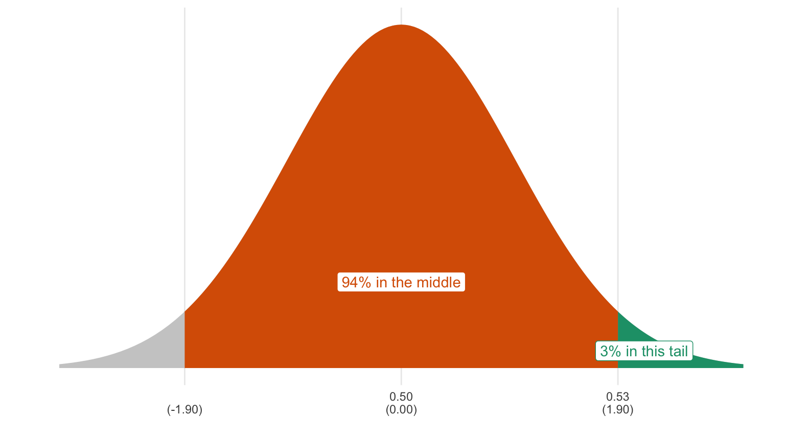
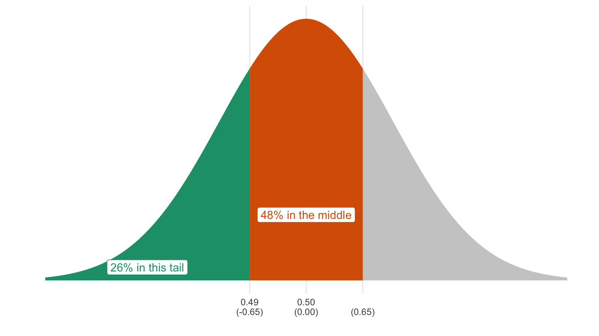

Chapter 6 Hypothesis Testing
As an alternative (or supplement) to confidence intervals, political scientists sometimes use p-values to test specific hypotheses.
6.1 The Null Hypothesis
In the hypothesis testing framework, the researcher establishes two hypotheses:
- A null hypothesis describes the scenarios that the researcher hopes to reject. If the researcher wants to argue in favor of a particular model or theory, then the null hypothesis describes scenarios inconsistent with the theory.
- An alternative hypothesis describes the scenarios that the researcher hopes to accept. If the researcher wants to argue in favor of a particular model or theory, then the alternative hypothesis describes scenarios consistent with the theory. I like to call the alternative hypothesis the “research hypothesis.”
The researcher then examines the data and determines whether the data are consistent with the null hypothesis. If the data are inconsistent with the null hypothesis, then the researcher rejects the null hypothesis and concludes that the research hypothesis must be correct.
Here’s an example. A pollster working for the Trump campaign reports a new poll to the president in which 520 of 1000 respondents reported that they approve of the job Donald Trump was doing as president. He exclaims: “Wonderful! More than half of Americans approve.” The pollster cautions: “No—more than half of the sample approves! That might be due to chance. The actual number might be 50% or less.”
So then the president wants to test (and hopefully reject) the null hypothesis that the proportion of Americans that approve is less than or equal to 0.5.
6.2 p-Values
To test a hypothesis, we compute a p-value. A p-value is the probability that we would observe data at least as extreme as the observed data if the null hypothesis is true. By “as extreme,” we mean data that are less consistent with the null hypothesis.
Here’s what we have so far:
- Null Hypothesis: population proportion is less than or equal to 0.5.
- Research Hypothesis: population proportion is greater than 0.5.
- Observed Data: sample proportion is 0.52.
To compute the p-value, we just need to compute the probability that we would get a sample of 0.52 or higher (i.e., less consistent with the null hypothesis), if the population proportion were 0.5 or lower.
The “or lower” piece at the end is required because those values are part of the null hypothesis, but that makes the computation hard. To get around this, it helps to focus on one particular parameter.
6.2.1 Focusing the Null Hypothesis
When the null hypothesis contains a range of possibilities (e.g., 0.5 or lower), we can simplify this by focusing on the most difficult value. In this case, the hardest to reject (the one most consistent with the sample proportion) is 0.5. This sounds tricky, but it’s not. Here are two guidelines for focusing the null hypothesis:
- If the sample statistic (e.g., sample proportion) equals a population parameter from the null hypothesis, then the p-value equals one. No further computation is needed. Skip right to the end.
- If the sample statistic (e.g., sample proportion) does not equal any population parameter from the null hypothesis, then find the parameter from the null hypothesis that’s closest to the sample statistic. That’s the only value you need to worry about, so I call it the “focused null hypothesis.” Once we have that value, there’s more work to be done.
In our case, the sample statistic falls outside the null hypothesis, so let’s choose the parameter from the null hypothesis that’s closest to the sample proportion of 0.52. The closest parameter from the null hypothesis to 0.52 is 0.50. That’s the “focused null hypothesis.”
6.2.2 Computing the p-value for the Focused Null Hypothesis
To compute the p-value now, we just need to compute the probability that we would get a sample of 0.52 or higher (i.e., less consistent with the null hypothesis) if the population proportion were 0.5. (By focusing the null hypothesis, we’ve eliminated the “or lower” piece.)
We know from the numbered-ticket model that if the population proportion were 0.5 (i.e., the focused null hypothesis were true), then…
- the expected value of sample proportion would be 0.5 and
- the SE of the sample proportion would be \(\frac{\sqrt{0.5 \times 0.5}}{\sqrt{1000}} = \frac{0.5}{31.623} = 0.016\).
I don’t use the sample proportion 0.52 in the formula for the SE as I did with confidence intervals. Instead, I use the population proportion of 0.50, which I can do because I am assuming that the (focused) null hypothesis is true. (Notice the “if the population proportion were 0.5” part of the statement above.) It doesn’t matter much, but if I’m assuming that the population proportion is 0.5 to compute the p-value, I can improve the accuracy slightly by assuming it when computing the SE as well.
Our observed sample proportion falls \(\frac{0.520 - 0.500}{0.016} = 1.250\) SEs above the expected value. We know that the sample proportion follows the normal curve. Using the rules of the normal curve, we can figure out the probability that we will get a sample proportion greater than or equal to 0.52. It’s 0.105. That’s the p-value.

But what do we do with this p-value? If the p-value is small enough, then we reject the null hypothesis in favor of the alternative. If the p-value is not small enough, then we cannot reject or accept either hypothesis. In the latter scenario, the data are consistent with both hypotheses, we cannot be confident that either is correct.
By convention, political scientists have settled on 0.05 as the critical value. If the p-value is less than or equal to 0.05, then reject the null hypothesis in favor of the alternative. If the p-value is greater than 0.05, then acknowledge that either hypothesis might be correct.
Much like a 95% confidence will fail to capture the population parameter 5% of the time, this test will incorrectly reject 5% of the time if the null hypothesis is true. In the long-run, you’ll incorrectly reject the null hypothesis at most 5% of the time if you use this method.
6.3 A Summary of the Hypothesis Testing Framework
- Write down a null hypothesis. This should be the hypothesis you want to reject.
- If the null hypothesis includes a range of population parameters, then you need to focus on one particular value using the rules discussed above.
- Compute the p-value, which is the probability that we observe data at least as extreme as the observed data if the null hypothesis is true. By “extreme,” I mean data that are less consistent with the null hypothesis.
- If the p-value is less than or equal to 0.05, then reject the null hypothesis in favor of the alternative. If the p-value is greater than 0.05, then acknowledge that either hypothesis might be correct.
Exercise 6.1 A pollster working for the Trump campaign reports a new poll to the president in which 510 of 1,000 respondents reported that they approve of the job Donald Trump was doing as president. He exclaims: “Wonderful! More than half of Americans approve.” The pollster cautions: “No—more than half of the sample approves! That might be due to chance. The actual number might be 50% or less.”
Compute the p-value for the null hypothesis that the proportion of Americans that approve is 0.5 or lower. Do you reject the null hypothesis?
Solution
First, identify the null hypothesis. The population proportion is 0.5 or lower.
Second, focus the null hypothesis. Because the sample proportion 0.51 is not part of the null hypothesis (from 0.00 to 0.50), we just choose the parameter from the null hypothesis that’s closest to 0.51. Our focused null hypothesis is 0.5.
Third, compute the p-value, which is the probability that we observe data at least as extreme as the observed data if the null hypothesis is true. For this problem, we consider proportions above 0.51 as “more extreme” than 0.51, since those are more different from 0.50 than 0.51.
If the (focused) null hypothesis is true, then…
- the expected value of sample proportion would be 0.5 and
- the SE of the sample proportion would be \(\frac{\sqrt{0.5 \times 0.5}}{\sqrt{1000}} = \frac{0.5}{31.623} = 0.016\).
The observed sample proportion falls \(\frac{0.510 - 0.500}{0.016} = 0.625\) SEs above the expected value. We know that the sample proportion follows the normal curve. Using the rules of the normal curve (and letting z = 0.65), we can figure out the probability that we will get a sample proportion greater than or equal to 0.51. It’s 0.26. That’s the p-value.
Because the p-value is greater than 0.05, you cannot reject the null. You conclude that the data are consistent with both the null hypothesis and the alternative hypothesis.

Exercise 6.2 Continuing 6.1. What if the poll was 530 of 1,000?
Solution
First, identify the null hypothesis. The population proportion is 0.5 or lower.
Second, focus the null hypothesis. Because the sample proportion 0.53 is not part of the null hypothesis (from 0.00 to 0.50), we just choose the parameter from the null hypothesis that’s closest to 0.53. Our focused null hypothesis is 0.5.
Third, compute the p-value, which is the probability that we observe data at least as extreme as the observed data if the null hypothesis is true. For this problem, we consider proportions above 0.53 as “more extreme” than 0.53, since those are more different from 0.50 than 0.53.
If the (focused) null hypothesis is true, then…
- the expected value of sample proportion would be 0.5 and
- the SE of the sample proportion would be \(\frac{\sqrt{0.5 \times 0.5}}{\sqrt{1000}} = \frac{0.5}{31.623} = 0.016\).
The observed sample proportion falls \(\frac{0.530 - 0.500}{0.016} = 1.875\) SEs above the expected value. We know that the sample proportion follows the normal curve. Using the rules of the normal curve (and letting z = 1.90), we can figure out the probability that we will get a sample proportion greater than or equal to 0.53. It’s 0.03. That’s the p-value.
Because the p-value is less than 0.05, you reject the null. You conclude that the data are not consistent with the null hypothesis and therefore conclude that the alternative hypothesis is correct.

Exercise 6.3 Continuing 6.1. What if the poll was 5,100 of 10,000?
Solution
First, identify the null hypothesis. The population proportion is 0.5 or lower.
Second, focus the null hypothesis. Because the sample proportion 0.51 is not part of the null hypothesis (from 0.00 to 0.50), we just choose the parameter from the null hypothesis that’s closest to 0.51. Our focused null hypothesis is 0.5.
Third, compute the p-value, which is the probability that we observe data at least as extreme as the observed data if the null hypothesis is true. For this problem, we consider proportions above 0.51 as “more extreme” than 0.51, since those are more different from 0.50 than 0.51.
If the (focused) null hypothesis is true, then…
- the expected value of sample proportion would be 0.5 and
- the SE of the sample proportion would be \(\frac{\sqrt{0.5 \times 0.5}}{\sqrt{10000}} = \frac{0.5}{100} = 0.005\).
The observed sample proportion falls \(\frac{0.510 - 0.500}{0.005} = 2\) SEs above the expected value. We know that the sample proportion follows the normal curve. Using the rules of the normal curve, we can figure out the probability that we will get a sample proportion greater than or equal to 0.51 if the null hypothesis is true. It’s 0.025. That’s the p-value.
Because the p-value is less than 0.05, you reject the null. You conclude that the data are not consistent with the null hypothesis and therefore conclude that the alternative hypothesis is correct.

Exercise 6.4 A pollster working for the Biden campaign reports a new poll to the candidate in which 490 of 1,000 respondents reported that they approve of the job Donald Trump was doing as president. He exclaims: “Wonderful! Less than half of Americans approve.” The pollster cautions: “No—less than half of the sample approves! That might be due to chance. The actual number might be 50% or more.”
Compute the p-value for the null hypothesis that the proportion of Americans that approve is 0.5 or higher. Do you reject the null?
Solution
First, identify the null hypothesis. The population proportion is 0.5 or higher.
Second, focus the null hypothesis. Because the sample proportion 0.49 is not part of the null hypothesis (from 0.50 to 1.00), we just choose the parameter from the null hypothesis that’s closest to 0.49. Our focused null hypothesis is 0.5.
Third, compute the p-value, which is the probability that we observe data at least as extreme as the observed data if the null hypothesis is true. For this problem, we consider proportions below 0.49 as “more extreme” than 0.49, since those are more different from 0.50 than 0.49.
If the (focused) null hypothesis is true, then…
- the expected value of sample proportion would be 0.5 and
- the SE of the sample proportion would be \(\frac{\sqrt{0.5 \times 0.5}}{\sqrt{1000}} = \frac{0.5}{31.623} = 0.016\).
The observed sample proportion falls 0.625 SEs below the expected value, because \(\frac{0.049 - 0.500}{0.016} = -0.625\). We know that the sample proportion follows the normal curve. Using the rules of the normal curve (and letting z = -0.65), we can figure out the probability that we will get a sample proportion less than or equal to 0.49 if the focused null hypothesis is true. It’s 0.26. That’s the p-value.
Because the p-value is greater than 0.05, you cannot reject the null. You conclude that the data are consistent with both the null hypothesis and the alternative hypothesis.
